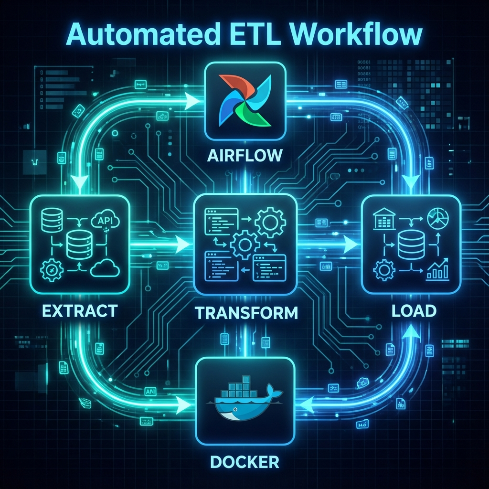

Automated ETL Framework
Orchestrating complex data dependencies with Apache Airflow and Docker.

The Challenge
The client's data engineering team was spending 40% of their time manually triggering scripts and debugging cron job failures. There was no visibility into job status or dependencies.